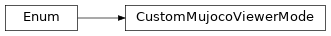

viewers
Different viewer implementations for mujoco.
Package Contents
Classes
Custom Viewer Object that allows for additional keyboard inputs. |
|
Enumerate different viewer modes for the CustomMujocoViewer. |
|
Native Viewer Object. |
|
Viewer types available for mujoco. |
- class CustomMujocoViewer(model: mujoco.MjModel, data: mujoco.MjData, *, backend: mujoco_simulator._render_backend.RenderBackend, width: int | None = None, height: int | None = None, start_paused: bool = False, render_every_frame: bool = False, hide_menus: bool = False, mode: CustomMujocoViewerMode = CustomMujocoViewerMode.CLASSIC, **_: Any)
Bases:
revolve2.simulation.simulator.ViewerCustom Viewer Object that allows for additional keyboard inputs.
- property context: mujoco.MjrContext
Get the context.
- Returns:
The context.
- property view_port: mujoco.MjrRect
Get the view_port.
- Returns:
The viewport.
- property can_record: bool
Return True.
- Returns:
True.
- current_viewport_size() tuple[int, int]
Grabs the current viewport size (and updates the cached values).
- Returns:
the viewport size
- render() int | None
Render the scene.
- Returns:
A cycle position if applicable.
- close_viewer() None
Close the viewer.
- class CustomMujocoViewerMode(*args, **kwds)
Bases:
enum.EnumEnumerate different viewer modes for the CustomMujocoViewer.
CLASSIC mode gives an informative interface for regular simulations.
MANUAL mode gives a cut down interface, specific for targeting robot movement manually.
- CLASSIC = 'classic'
- MANUAL = 'manual'
- class NativeMujocoViewer(model: mujoco.MjModel, data: mujoco.MjData, *, key_callback: Callable[[int], None] | None = None, **_: Any)
Bases:
revolve2.simulation.simulator.Viewer
Native Viewer Object.
- property context: mujoco.MjrContext
Get the context.
- Returns:
The context.
- abstract property view_port: mujoco.MjrRect
Get the view port.
- Raises:
NotImplementedError – As it is not implemented.
- property can_record: bool
Return False.
- Returns:
False.
- render() int | None
Render the scene.
- Returns:
A cycle position if applicable.
- close_viewer() None
Close the viewer.
- abstract current_viewport_size() tuple[int, int]
Grabs the current viewport size (and updates the cached values).
- Raises:
NotImplementedError – As it is not implemented.
- class ViewerType(*args, **kwds)
Bases:
enum.Enum
Viewer types available for mujoco.
- NATIVE
- CUSTOM
- static from_string(value: str) ViewerType
Get viewer type from string.
- Parameters:
value – The value.
- Returns:
The viewer type.
- Raises:
ValueError – If the passed value has no viewer type defined.